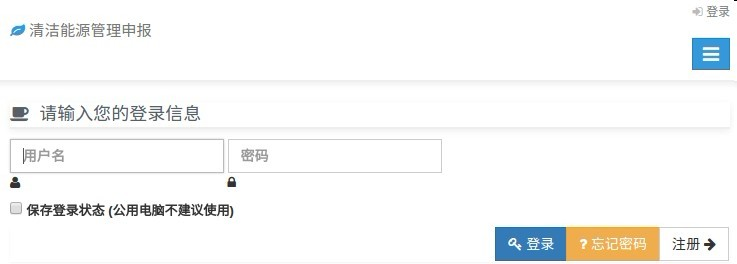

1、 忘记设置后的密码，怎么办？
答：可以在登录界面，点击“忘记密码”，之后“重置密码”，输入相关信息来找回密码。
2、专家预审后，是不是只有不通过的审核单位来修改“审核评估报告”？
答：不是，不管专家预审通过与否，都要根据专家给出的意见来修改“审核评估报告”。
3、填写完“清洁生产审核登记表”之后还能否修改 ？
答：当你填写“清洁生产审核登记表”点击“下一步”之后，就不可以更改。
4、是不是所有的审核单位都要上传“合同”。
答：不是，只有审核单位委托咨询机构进行申报的，才需要上传审核单位跟咨询机构之间签订的合同。
5、如果审核单位的申报未完成，还能否再次申报 ？
答：审核单位如果未申报完成，就不可以再次申报，每个审核单位只可以进行一次申报，审核通过后才可以再次申报。